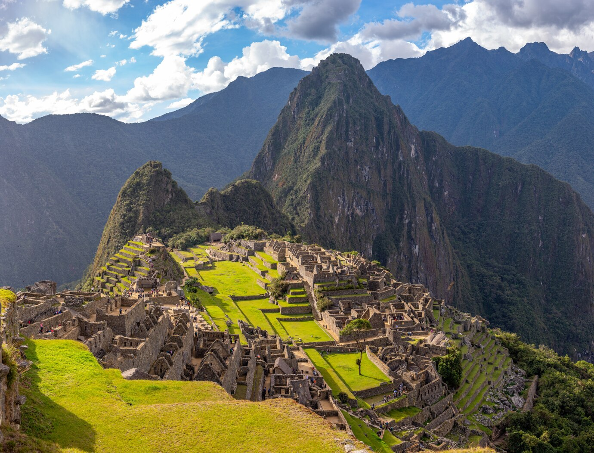
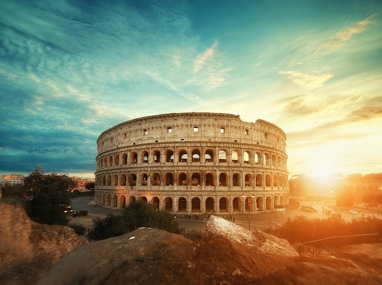

Conheça destinos incríveis
Dicas de lugares surpreendentes para sua viagem
Machu Picchu, Peru
Machu Picchu, localizado no Peru, é uma das atrações mais emblemáticas do mundo. Conhecida como a "Cidade Perdida dos Incas", essa maravilha arqueológica está situada a cerca de 2.400 metros de altitude, cercada por montanhas majestosas e natureza exuberante. Construída no século XV, acredita-se que tenha sido um importante centro político, religioso ou residencial do império Inca. Para chegar até Machu Picchu, é possível optar por uma trilha de aventura, como a famosa Trilha Inca, ou por um percurso mais confortável, utilizando trem e ônibus a partir da cidade de Cusco, porta de entrada para a região. A experiência inclui explorar ruínas fascinantes, como templos, terraços agrícolas e a icônica estrutura do Intihuatana, que reflete o avançado conhecimento astronômico dos Incas. A melhor época para visitar é durante a estação seca, entre abril e outubro, para garantir boas condições climáticas e vistas deslumbrantes. Além do aspecto histórico, Machu Picchu oferece uma conexão única com a cultura andina e um cenário de tirar o fôlego, sendo um destino imperdível para quem busca uma viagem enriquecedora.
Sidney, Austrália

Sydney, na Austrália, é uma das cidades mais vibrantes e icônicas do mundo, famosa por sua beleza natural, arquitetura deslumbrante e estilo de vida descontraído. Localizada na costa sudeste do país, Sydney é cercada por praias espetaculares, como Bondi e Manly, e conta com atrações imperdíveis, como a mundialmente conhecida Ópera de Sydney e a Harbour Bridge. A cidade oferece uma rica mistura de atividades culturais, culinária diversificada e aventuras ao ar livre. Os visitantes podem explorar o bairro histórico de The Rocks, passear de ferry até a deslumbrante baía de Sydney, ou aproveitar o dia no Royal Botanic Garden. Para os amantes da natureza, o Blue Mountains National Park, localizado nas proximidades, é uma excelente oportunidade para trilhas e vistas panorâmicas. Sydney é agradável durante todo o ano, mas os meses de primavera (setembro a novembro) e verão (dezembro a fevereiro) são ideais para aproveitar suas praias e eventos ao ar livre. A cidade combina modernidade com paisagens naturais impressionantes, tornando-se um destino inesquecível para todos os tipos de viajantes.
Bali, Indonésia

Bali, na Indonésia, é um destino paradisíaco conhecido por suas paisagens tropicais, praias deslumbrantes, cultura rica e atmosfera espiritual. Conhecida como a "Ilha dos Deuses", Bali oferece uma combinação única de beleza natural e experiências culturais, atraindo viajantes de todo o mundo. A ilha é famosa por suas praias, como Kuta, Seminyak e Uluwatu, ideais para relaxar ou surfar. Além disso, Bali é repleta de templos históricos, como o Tanah Lot e o Uluwatu Temple, que proporcionam vistas impressionantes ao pôr do sol. O interior da ilha, com campos de arroz em Ubud, cachoeiras e vulcões como o Monte Batur, é perfeito para quem busca contato com a natureza. Bali também é conhecida por sua hospitalidade e tradições culturais, como as cerimônias balinesas, danças típicas e a culinária local, que inclui pratos como o nasi goreng e satay. A ilha oferece opções de hospedagem que vão de resorts luxuosos a acomodações acessíveis. A melhor época para visitar é durante a estação seca, de abril a outubro, quando o clima é mais estável. Seja para relaxar, explorar ou se conectar com a espiritualidade, Bali é um destino inesquecível.
Roma, Itália
Roma, a capital da Itália, é um destino fascinante que combina história, arte e cultura com um charme vibrante. Conhecida como a "Cidade Eterna", Roma oferece uma viagem no tempo com seus marcos icônicos, como o Coliseu, o Fórum Romano e o Panteão, que refletem a grandiosidade do Império Romano. O coração da cidade é o Vaticano, um estado independente dentro de Roma, onde estão a Basílica de São Pedro e a Capela Sistina, com seus famosos afrescos de Michelangelo. A cidade também encanta com suas piazzas charmosas, como a Piazza Navona e a Piazza di Spagna, além das fontes espetaculares, como a Fontana di Trevi. Roma é famosa por sua culinária, com pratos como massas frescas, pizzas autênticas e gelatos irresistíveis. As ruas estreitas e históricas da cidade estão repletas de cafés, restaurantes e lojas de moda. A melhor época para visitar é na primavera (abril a junho) ou no outono (setembro a outubro), quando o clima é agradável e as multidões são menores. Roma é um destino essencial para quem deseja mergulhar em história, arte e o espírito vibrante da Itália.